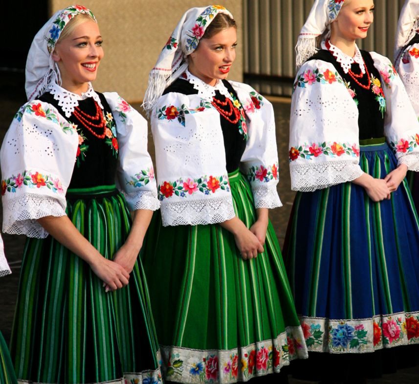
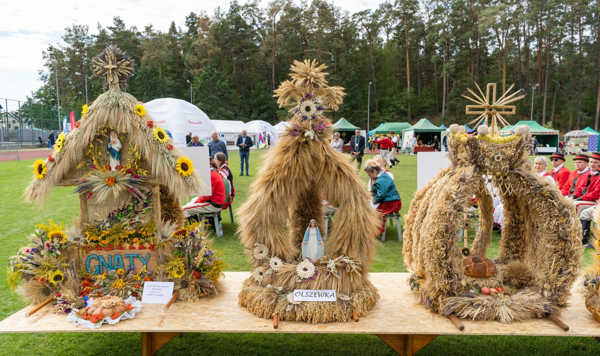

Najbardziej znane jest oczywiście Mazowsze – Państwowy Zespół Ludowy Pieśni i Tańca. Ich choreografie, stroje i
pieśni czerpią z tradycji wiejskich z różnych części regionu. Mazowieckie
oberki i polki mają charakter lekki, skoczny i melodyjny – widać w nich
radość i codzienność życia na wsi.

Strój ludowy
Mazowiecki strój ludowy jest prostszy niż np. podhalański, ale ma w sobie elegancję:
białe koszule, wełniane pasy, czerwone lub
pomarańczowe elementy, delikatne hafty. Wyróżnia
się też charakterystyczna pasiasta tkanina (tzw. pasiaki),
szczególnie z okolic Łowicza.

Rzemiosło i sztuka ludowa
Na Mazowszu mocno rozwijało się
garncarstwo, wycinanki (zwłaszcza łowickie), tkactwo,
plecionkarstwo i kowalstwo. Do dziś można spotkać twórców,
którzy kontynuują te tradycje, choć często nadają im nowoczesną formę.
Tradycyjne obyczaje
Do najważniejszych należą obrzędy doroczne – kolędowanie, dożynki, procesje Bożego Ciała,
wielkanocne palmy. W wielu wsiach te zwyczaje wciąż są żywe i pełnią rolę wspólnotową.